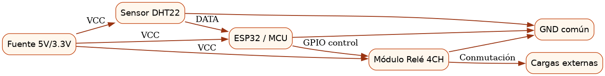

Diseño de un sistema electrónico que permite el control de encendido y la amplificación de señales, integrando hardware, software y documentación completa.
Hardware
Microcontrolador Arduino (Control de encendido)
Amplificador Operacional LM741 (Etapa de amplificación)
Resistencias y Condensadores (Ajuste de ganancia y filtrado)
Fuente de alimentación (Regulada)
Software
// Código de ejemplo para control de encendido con Arduino
const int RELAY_PIN = 7; // Pin para controlar el encendido (ej. mediante un relé)
void setup() {
pinMode(RELAY_PIN, OUTPUT);
// Inicialización para control de amplificación si es necesario
}
void loop() {
// Lógica de encendido/apagado
digitalWrite(RELAY_PIN, HIGH); // Encender
delay(5000);
digitalWrite(RELAY_PIN, LOW); // Apagar
delay(5000);
}
Diagramas
3.1. Diagrama de Bloques Funcionales
Figura 3.1: Arquitectura de bloques funcionales del sistema.
3.2. Diagrama del Circuito Esquemático

Figura 3.2: Circuito esquemático detallado de la solución de ingeniería.